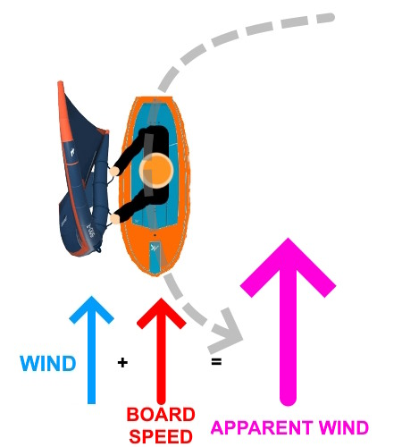
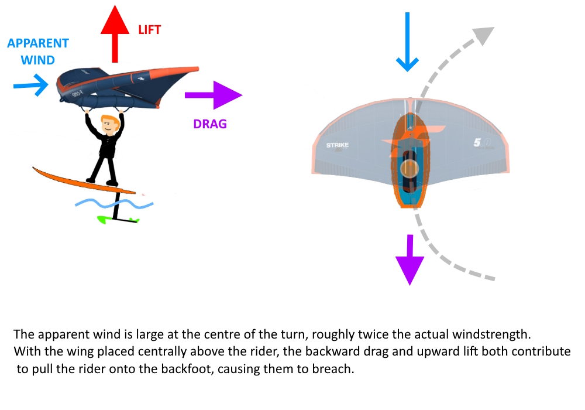
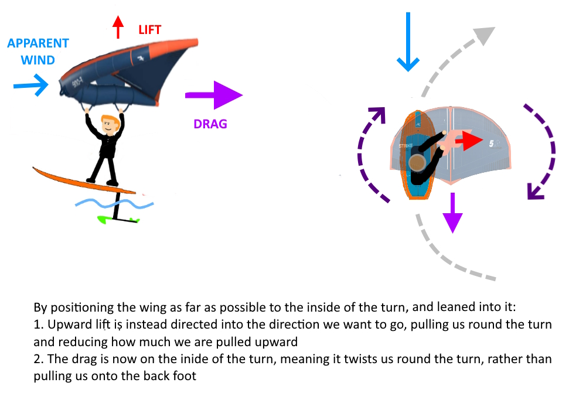

Tacking
Prerequisite - comfortable sailing switch-stance
Conditions - Flat Water and Wind - gusts of 14kts to 25kts
Apparent Wind
Like gybing, Apparent Wind plays a cruical role in this move. However, instead of it reducing, it increases, because we are turning upwind:

This increase in Apparent wind in the tack is the biggest factor when people struggle with them
Toeside Tack
It is easier to start with the toeside (switch-stance) tack.
- Sail across the wind with good speed, switch-stance. The more speed, the more likely a foiling exit
- Put pressure on your toes, to carve into the wind. Start off with a gentle carve. You are unlikely to foil out, but have more time to practice the correct technique
- Keep your weight forward. This is critical, as the increased apparent wind will try to push you onto your back foot, leading to a breach
- Take your back hand off the wing, and pass your front hand over your head. Try to get your hand as low and far away from your body as possible.
The biggest mistake people make when tacking is leaving their front hand over their head, rather than getting it as far away from the body as possible. These diagrams explain:
Wrong:

Correct:

- Try and power the wing up on the new tack as soon as possible
- Once comfortable, you can tighten up the turn to make a foiling exit more likely
Summary
- The big problem with learning to tack is to deal with the increased Apparent Wind
- By shifting the wing as far across the body as possible, the extra Apparent wind aids the turn, rather than hinders it